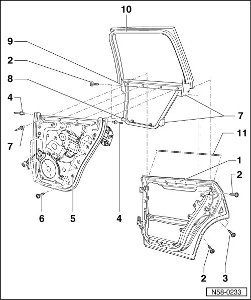

Rear Door Assembly Overview
Rear Door
Rear Door Assembly Overview

Construction of the Touareg door differs considerably from that of other models.
Entire door consists of outer door panel - 1 -, assembly carrier - 5 - and window frame - 10 -. When assembly carrier and window frame are joined together, it is referred to as a subframe.
Assembly carrier and window frame cannot be completed individually. Only when they are combined to form the subframe can individual parts be installed.
1 Outer door panel
2 Bolt
• Joins outer door panel to window frame.
• Quantity: 4
• 20 Nm
3 Bolt
• Joins outer door panel to door lock.
• Quantity: 2
• 20 Nm
4 Hollow rivet
• Joins assembly carrier to window frame.
• Quantity: 2
5 Assembly carrier
• Individual components, refer to --> [ Assembly Carrier Components Assembly Overview ] Assembly Carrier Components Assembly Overview
6 Bolt
• Joins assembly carrier to outer door panel.
• Quantity: 8
• 8 Nm
7 Hollow rivet
• Joins assembly carrier to window frame.
• Quantity: 4
8 Adjuster
• Quantity: 3
• Self-adjusting
• Must be retracted as far as possible before subframe is installed.
9 Mount
10 Window frame
• Individual components, refer to --> [ Individual Window Frame Components Assembly Overview ] Description and Operation
11 Window recess seal
• Inserted on flange